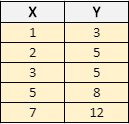

Método de mínimos cuadrados
Descripción
Este método busca que a partir de varias observaciones se obtenga una función que permita aproximar los futuros resultados, de forma que al graficar la función se tenga una demostración visual de cómo se comportará un determinado experimento a futuro.
Simplificando la teoría, este método busca minimizar la suma de los cuadrados de las diferencias ordenadas (o residuos) entre los puntos teóricos y los puntos experimentales.
Definición
Su expresión general se basa en la ecuación de una recta y = mx + b. Donde m es la pendiente, b el punto de corte y n el número de muestras tomadas y vienen expresadas de la siguiente manera:
Ejemplo (Adaptado de: Anderson & Sweeney, 2008)
Un trabajador novato emplea un tiempo de X horas en hacer una cantidad Y de camisas, este sujeto toma registros de cuántas camisas ha elaborado en determinado tiempo y quiere saber cuántas camisas habrá hecho en un lapso de 48 horas

En la anterior tabla vemos los datos organizados que usaremos para nuestro procedimiento
Ahora obtenemos los datos que nos serán de utilidad como la sumatoria de X*Y y X^2
Ahora que reemplazamos los resultados obtenidos en la fórmula, procederemos a desarrollar las operaciones y así obtendremos los términos m y b que requerimos para hacer nuestra aproximación
Cuando sustituimos los valores de m y b en la fórmula general de la recta y = mx + b
Para visualizar la línea que se generó con nuestro procedimiento, la graficamos junto a las coordenadas de los datos x y y del enunciado del ejercicio
Si usamos la línea del resultado, y reemplazando 48 horas en x obtenemos que en ese lapso, este trabajador habrá elaborado 70 camisas, dato que podemos comprobar en nuestra gráfica mostrado como el punto F
PRUEBA HACERLO AHORA TU
- x : y :
La recta es
- x --> {{lr.slope1}}
- b --> {{lr.intercept1}}